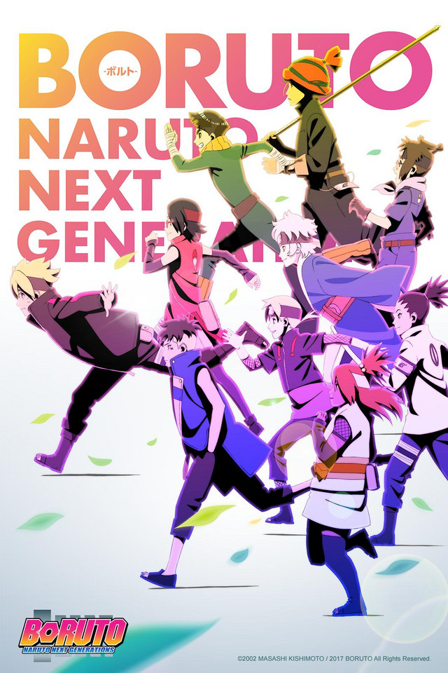
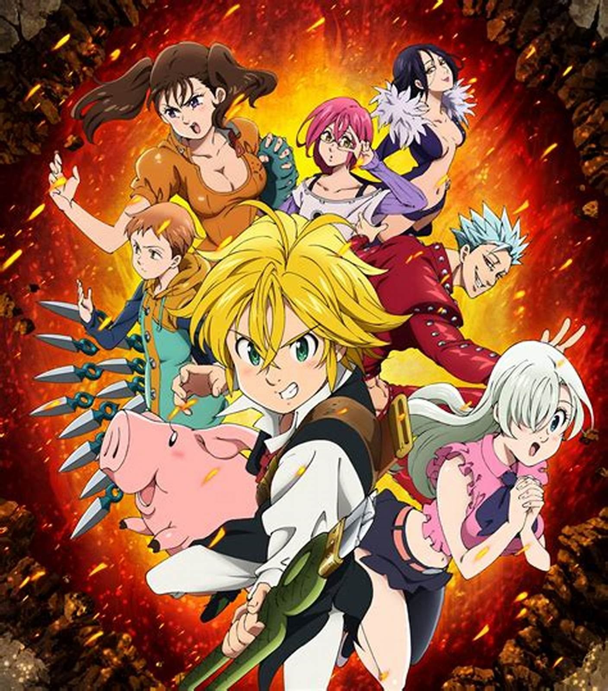

| Vuelve Dragon Ball con una nueva serie tras muchos años. Nuevos enemigos, nuevas y poderosas formas, y nuevos personajes que darán forma al futuro de los conocidos personajes. ¡Emociónate, disfruta y diviértete con Son Goku, Vegeta, Gohan y el resto de sus compañeros. Dragon Ball es un manga escrito e ilustrado por Akira Toriyama. Fue publicado originalmente en la revista Shōnen Jump, de la editorial japonesa Shūeisha, entre 1984 y 1995. |  |
 |
Naruto quiere ser el mejor ninja en la tierra. La acción comienza tras los dos años y medio que el protagonista, Naruto Uzumaki, ha pasado entrenando con su maestro Jiraiya. En ella reaparecen todos los personajes de la serie anterior pero con más experiencia y fuerza. Además, la Organización Akatsuki entra en acción, tras su breve aparición en la parte anterior, y se revelan sus objetivos. |
| En Konoha han entrado en una era de paz y modernidad. Los altos edificios despuntan en las calles, las pantallas gigantes muestran imágenes de todo tipo y los medios de transporte conectan los vairos distritos. Pese a que sigue siendo una aldea ninja, el número de civiles ha aumentado y la vida de los ninja ha cambiado. Boruto Uzumaki es hijo del Séptimo Hokage, Naruto Uzumaki, y se ha unido a la Academia Ninja para aprender. Otros estudiantes lo menosprecian de inmediato y consideran que solo está ahí por ser "hijo del Hokage", pero pronto Boruto disipará todas esas dudas sobre él. |  |
 |
Estamos en la era Taisho de Japón. Tanjiro, un joven que se gana la vida vendiendo carbón, descubre un día que su familia ha sido asesinada por un demonio. Para empeorar las cosas, su hermana menor Nezuko, la única superviviente de la masacre, ha sufrido una transformación en demonio. Destrozado por los acontecimientos Tanjiro decide convertirse en un cazador de demonios para poder devolver a su hermana a la normalidad y matar al demonio que masacró a su familia. |
| Un grupo de tiranos tomó el trono. Ahora la princesa deberá buscar a un grupo de caballeros que la ayude a recuperar el reino. Los siete pecados capitales, también conocidos como los pecados cardinales o vicios capitales, es una agrupación y categorización de las faltas humanas que, además de ser contrarias a las enseñanzas cristianas en función del objeto elegido, del fin que se busca o la intención y de las circunstancias de la acción u omisión, se cometen de modo reiterado, repetitivo o habitual oscureciendo la conciencia y distorsionando la valoración concreta de los actos humanos. |  |